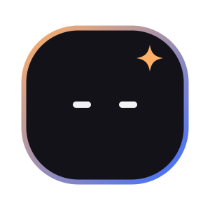
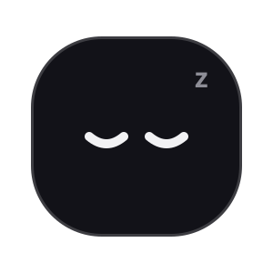

Eyes glide between moods on the NOVA curve (400 ms). Blinks are instant (120 ms).
IdleCalm, ready. Blinks every few seconds.

Blink120 ms, now and then, so it feels alive.ListeningEyes open wider while you type or talk.
ThinkingLooks up and to the side; dots pulse.
WorkingFocused squint while it runs something you approved.
Happy / DoneSmiling eyes when a task is finished.
AskingOne eyebrow up: "Can I…?" Rim turns orange.
OopsSomething went wrong. Never red-alarm, just honest.

SleepingOff or idle for a while. No listening, ever.